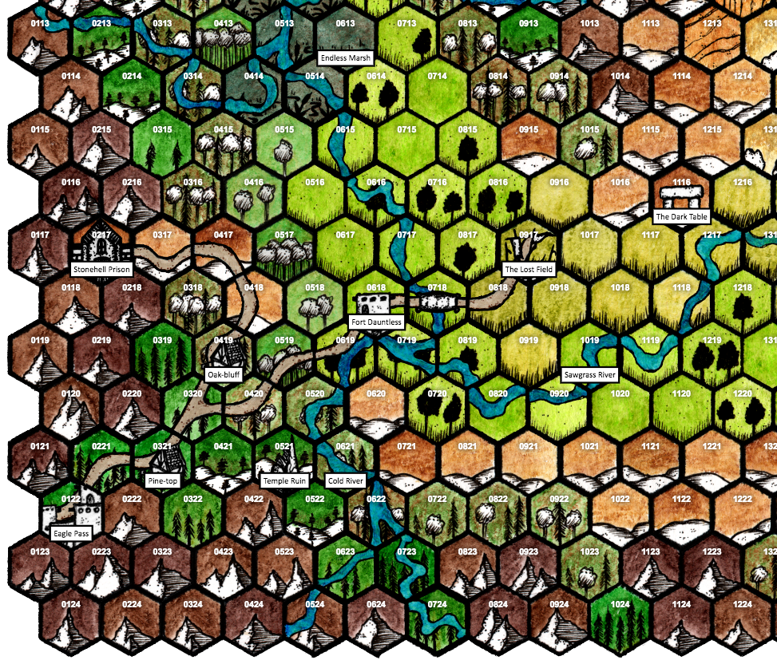

Regions¶
The major features near Eagle Pass are on the nearby map (one hex is about 2 leagues across).
| Region | Key hexes | Notes |
|---|---|---|
| Oak-bluff | 0419
0217 |
Village of Oak-bluffs
Stonehell prison |
| Pine-top | 0321
0521 |
Village of Pine-top
Ruined temple |
The Imperial scouts have over the decades brought back the terrain and site information on this map; only folk-knowledge from locals has more information (and PCs are welcome to interact with them to find out more about where loot could be found).
Eagle Pass. The walled town serving as the homebase for the campaign. It’s at the mouth of a mountain pass: behind, westward, lay the more settled lands of the empire; before lay the trackless lands of the eastern marches. The town has a few thousand people in it. The current legate evacuated the garrison of Fort Dauntless years ago, and brought it back into the town to fortify the town’s militia, when the sitting Emperor withdrew the Eagle Pass legion for other duties.
Pine-top, Oak-bluff. The two largest villages near Eagle Pass. The denizens of Pine-top are mostly Imperial citizens; those in Oak-bluff, mostly native.
Fort Dauntless. This used to be the forward picket for the Empire’s presence in the area. Now it’s periodically staffed by a small watch semi-regularly staffed from the Eagle Pass garrison.
Temple Ruin. An ancient Eldar temple, recently uncovered by a landslide.
Stonehell Prison. Under Darius, Stonehell was used as a prison on the far edge of the empire, to receive all manner of undesirables and criminal nasties, whether truly guilty or not. After Darius’ removal, an Imperial task group carried out a liberation and strategic shut-down of the Stonehell facility. What the force found there was unpleasant and rarely talked about. No-one has gone there in decades; nobody would dare.
The Lost Field. The site of a great battle between a massed rag-tag army of beastmen and an imperial legion. First, the beastmen descended upon and murdered the crew of citizens working on extending the imperial road. Then, they were descended upon and pacified by the garrison at Fort Dauntless. It’s unlikely that the tribes in the region have forgotten.
The Dark Table. This massive dolmen/henge site is known to be a religious site of importance to beastfolk tribes in the region.
Cold River, Sawgrass River, Endless Marsh. The Cold River is the main river that runs north-south up through the map. The bridge to the east of Fort Dauntless cross the Cold River. The Sawgrass River branches off the Cold, and heads gradually east and north. The Endless Marsh is a massive lowland marsh at the confluence of several rivers joining the Cold.